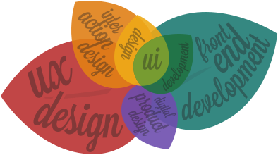

<!DOCTYPE html><html class="no-js" lang="en"><head>
	<meta charset="utf-8">
	<title>What I do | Sara Coutinho | Senior digital product &amp; interaction designer, UX/UI designer, and front-end developer</title>
	<meta name="description" content="I'm a reliable, pragmatic person with a proven track record of taking on complex projects and moving them forward. I take pride in strategising and crafting cohesive solutions and strive to deliver high quality, long lasting results">
	<meta name="viewport" content="width=device-width, initial-scale=1">
	<link rel="preconnect" href="https://fonts.gstatic.com">
<link href="https://fonts.googleapis.com/css2?family=Lora:ital,wght@1,400;1,700&amp;family=Mulish:wght@300;400;600&amp;display=swap" rel="stylesheet">

<link rel="stylesheet" href="css/main.css">

</head>
<body class="what-i-do">
<div id="main" class="main text-page">
	
<header id="main-header">
	<div class="content">
		<a href="\" class="logo-inline">Sara Coutinho</a>
		<nav class="nav-main" id="main-menu">
			<ul>
				<li class="about">
					<a href="about">
						<span class="title">About me</span>
						<span class="caption">A brief intro</span>
					</a>
				</li>
				<li class="skills">
					<a href="what-i-do" class="selected">
						<span class="title">What I do</span>
						<span class="caption">Process &amp; Skills</span>
					</a>
				</li>
				<li class="portfolio ">
					<a href="portfolio/">
						<span class="title">Work</span>
						<span class="caption">Portfolio</span>
					</a>
                    <ul class="sub-menu">
                        <li>
                            <a href="portfolio/kiwiviz">KiwiViz</a>
                        </li>
                        <li>
                            <a href="portfolio/cacophony">Cacophony</a>
                        </li>
                        <li>
                            <a href="portfolio/ws">WhereScape</a>
                        </li>
                        <li>
                            <a href="portfolio/trimble">Trimble</a>
                        </li>
                        <li>
                            <a href="portfolio/tvn">TVN</a>
                        </li>
                        <li>
                            <a href="portfolio/bird-counter">Bird Counter</a>
                        </li>
                    </ul>
				</li>
				<li class="scrapbook">
					<a href="http://scrapbook.saracoutinho.co.nz" target="_blank" rel="nofollow">
						<span class="title">Scrapbook</span>
						<span class="caption">The inspiration stream</span>
					</a>
				</li>
				<li class="contact">
					<a href="contact">
						<span class="title">Contact</span>
						<span class="caption">Say hi</span>
					</a>
				</li>
			</ul>
			<button class="trigger" id="menu-hide">Close</button>
		</nav>
		<button class="trigger" id="menu-show">Menu</button>
	</div>
</header>	<div class="content">
		<h1>Digital product design &amp; Front-end development</h1>
		<p class="lead">I'm a reliable, pragmatic person with a proven track record of taking on complex projects and moving them forward. I take pride in strategising and crafting cohesive solutions and strive to deliver high quality, long lasting results.</p>

        <div class="img-wrapper illustration">
            
        </div>

        <div class="text">

            <h2>What I do</h2>

            <p>I'm a career <strong>contract</strong> <strong>UX/UI designer</strong> with <strong>sharp development skills</strong> who's contracted for some of the best <strong>design agencies</strong> and <strong>software development</strong> companies in <strong>Auckland</strong> and <strong>Christchurch</strong>. I'm fortunate to have worked on a multitude of projects with a wide range of talented people  from designing and building brochure websites to shaping complex mobile and desktop applications from the ground up.</p>

            <h2>Adding value</h2>

            <p>I'm not afraid of tackling complex, highly-technical projects, where creating relationships with stakeholders, developers and managers is a must. I'll quickly become a part of your team and help drive projects forward.</p>

            <p>While I appreciate good looking digital products, I believe it's more important to take an holistic approach to the design process, and have a firm understanding of the why, what, how and for who of the product being created.</p>

            <p>Being able to work as both designer and developer means that the final product functions as good as it looks. When working on software products, I'm an advocate of using interactive, high-fidelity prototypes, as these are one of the best ways to test assumptions and reduce risk.</p>

            <h2>Future collaborations</h2>

            <p>I'm keen to work with companies that need a cross-disciplinary designer who is involved throughout their product lifecycle.
            </p>

	<p>I have a particular interest in helping organisations that want to blend environmental conservation and technology to achieve their goals
Additionally, if you're interested in communicating science findings in more accessible way, please get in touch.</p>

        </div>

        <div>

            <div class="extras">

                <div class="skills-wrapper">
                    <h4><span>What you can expect from me</span></h4>
                    <ul>
                        <li>A business perspective</li>
                        <li>An understanding of the users' needs</li>
                        <li>Awareness of implementation requirements</li>
                        <li>Good communication</li>
                        <li>A team player who's able to self manage</li>
                        <li>Quick learning</li>
                        <li>A quirky sense of humour</li>
                        <li>Straight talk: no bull</li>
                    </ul>
                </div>

                <div class="skills-wrapper">
                    <h4><span>What I will deliver</span></h4>
                    <ul>
                        <li>Requirements (when they are not fully formed)</li>
                        <li>Data analysis</li>
                        <li>Low and high fidelity wireframes</li>
                        <li>Interactive prototypes</li>
                        <li>Process and documentation</li>
                        <li>Style guides (design and implementation)</li>
                        <li>Front-end chops</li>
                        <li>Clarification and simplification</li>
                    </ul>
                </div>

            </div>

        </div>

        <h3 class="text-center">Industries of specialisation</h3>
        <p class="lead">Data warehousing <span>/</span> GIS <span>/</span> Conservation <span>/</span> Technology <span>/</span> Bioacoustics</p>

        <div class="text">
            <a href="/cv/" class="btn-link" target="_blank">Download CV</a>
        </div>

        <div class="text cta">
            <h2>Keen to work together?</h2>
            <p class="email">sara[at]saracoutinho[dot]co[dot]nz</p>
        </div>

	</div>
	<footer id="main-footer">
		<span class="enviro">This website is made from 100% recycled pixels</span>
	</footer>
</div>
<script src="scripts/analytics.js"></script>
<script type="text/javascript">
    window.addEventListener("load", function () {
        let mainMenu = document.getElementById("main-menu") || "";
        let menuTrigger = document.getElementById("menu-show") || "";
        let menuClose = document.getElementById("menu-hide") || "";

        function toggleMenuClass() {
            if (mainMenu.classList.contains("selected")) {
                mainMenu.classList.remove("selected");
            } else {
                mainMenu.classList.add("selected");
            }
        }

        menuTrigger.onclick = toggleMenuClass;
        menuClose.onclick = toggleMenuClass;


        let mainHeader = document.getElementById("main-header");
        let previousScrollPosition = window.pageYOffset;

        if (window.pageYOffset >= 68) {
            positionHeader();
        }

        function positionHeader() {
            if (window.pageYOffset >= 68) {
                let currentScrollPosition = window.pageYOffset;

                if (!mainHeader.classList.contains("show-on-scroll-up")) {
                    mainHeader.classList.add("show-on-scroll-up");
                }

                if (previousScrollPosition > currentScrollPosition) {

                    if (mainHeader.classList.contains("hide")) {
                        mainHeader.classList.remove("hide");
                    }

                } else {
                    if (!mainHeader.classList.contains("hide")) {
                        mainHeader.classList.add("hide");
                    }

                }
                previousScrollPosition = currentScrollPosition;
            } else {

                if (mainHeader.classList.contains("show-on-scroll-up")) {
                    mainHeader.classList.remove("show-on-scroll-up");
                }
                if (mainHeader.classList.contains("hide")) {
                    mainHeader.classList.remove("hide");
                }
            }
        }

        window.onscroll = positionHeader;

    });
</script>


</body></html>